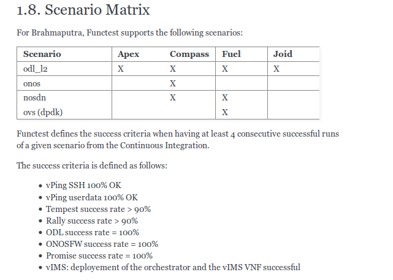

From Arno to Colorado
Functest: Many rivers to cross
Functest contributors
OPNFV Design Summit, 20/6/2016, Berlin
“Bad programmers have all the answers. Good testers have all the questions. Gil Zilberfeld - ”
# Agenda
* Functest
* Arno
* Brahmaputra
* Colorado
* D, E, F rivers and beyond
# The dream team

## Our goals
### make sure OPNFV works......
## so concretely...
* Validate scenarios for the release
* Give confidence on OPNFV fresh releases
* Ensure consistancy towards installers
* Ensure End to End interoperability
## and also
* Provide functional test suites to be replayed
* ~ post install sanity check
* usable for plugfests
* coherent with ETSI and Telco needs
* Provide test tools
* run tests
* collect info
* create dashboard
## Our goals are not....
* Performance testing (yardstick, Xperf )
* Re-do tests done in specific projects
* storage/storeperf
* infra audit/qtip
* Compare results
## Our rules
* Re-use as much as possible upstream suites (Rally, Tempest, Robot, testOn..)
* Keep it simple...
* Automate (if not it is not a test...)
* Create new suites only if tests not covered
* Consider fields not addressed by existing test projects
## Our rules
* Installer neutral
* Controller neutral
* Black box approach
## Proof of concept
* 4 Testcases: vPing (userdata), Tempest, Rally, ODL
* 1 scenario: os-odl_l2-nofeature-ha
* 2 installers: Foreman/Fuel
* Lots of manual operations (reporting, documentation)
## More everything....
* 7 Testcases: vPing (ssh), ONOS, vIMS, Tempest and Rally extended
* 3 feature projects: doctor, promise, sdnvpn
* 13 Scenarios
* 4 Installers (Apex, Compass, Fuel, Joid)
* Test result collection
* Automatic dashboard
Brahmaputra Scenario matrix

Comparison odl_l2-nofeature-ha scenario
| Project |
Apex |
Compass |
Fuel |
Joid |
| POD |
LF POD1 |
Huawei US |
Ericsson POD2 |
Orange POD2 |
| Functest |
2h50 |
1h45 |
2h35 |
2h30 |
| Yardstick |
1h05 |
1h00 |
1h00 |
0h55 |
* difference of duration due to POD and test suites
## Lessons learned
* Tempest/Rally
* harmonizing installer related OpenStack configuration differences
* creating customized test lists
* main challenge was resolving SDN controller interworking problems
* vIMS
* complete but complex test case
* very interesting to automate (pre MANO, most of Telco needs met there)
## What's new?
* New internal test cases: healthcheck, security
* New controler: OpenContrail?
* New feature projects (domino, multisites, movie, parser, moon, copper, models, onos-sfc...)
* ARM Support (congratulations to ANEA team!)
* Simplified feature project integration journey
## What's new?
* Slicing of the tests (healthcheck / Smoke / SDN controllers / Features / Components / VNFs)
* Better Test duration management
* Refactoring (repo, case management, test API)
* Automatic reporting
* Dashboard evolution to ELK
* CLI
# Many rivers to cross
## Functest beyond Colorado
## More test cases
* New VNFs (vEPC, vCDN, vWhatever...)
* Multi sites (e.g bgpvpn with different back ends)
* Better test coverage
## A Functional testing As a Service framework
* Scenario owner can select their relevant test cases
* Test duration estimation
* Agile dashboarding
* Analytics
## Upstream
* Rally: time to give back more
* Functest description for ETSI?
Thank you